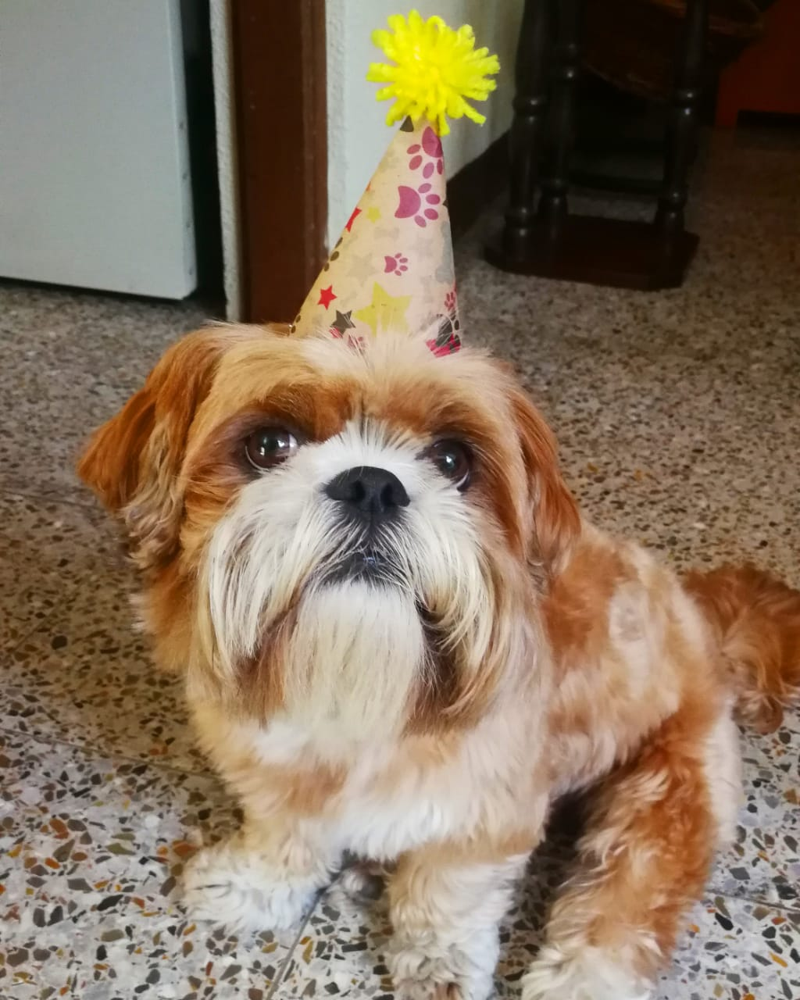

I AM
CHEWIE
My test page

La pagina de don chewie
DON CHEW
CHEWIE STEWART
Rango de peso: Machos: 5 - 10 kg Hembras: 5 - 10 kg
Características:
Braquiocefálico (cara aplastada), orejas caídas (de forma natural)
Esperanza de vida: 11 - 14 años
Tendencia a babear: baja
Tendencia a roncar: baja
Tendencia a ladrar: alta
Tendencia a excavar: moderada
Necesidad de atención/Socialización: alta
instagram de Chewie
Change user